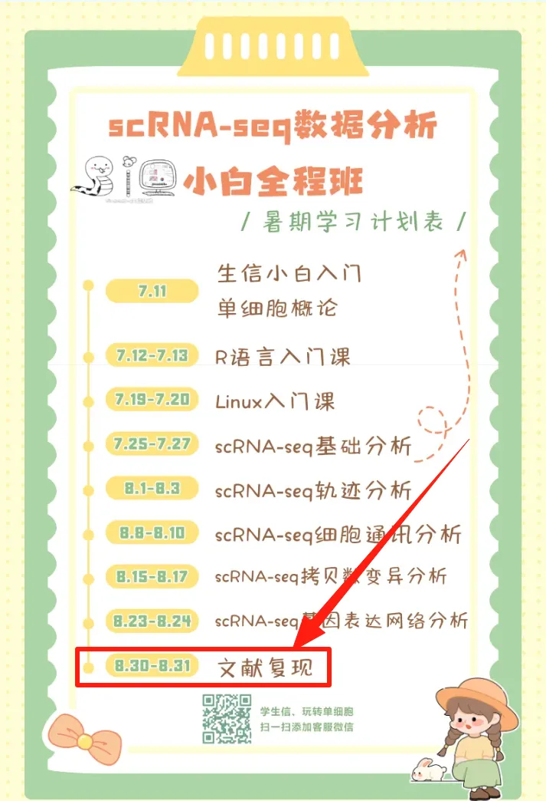
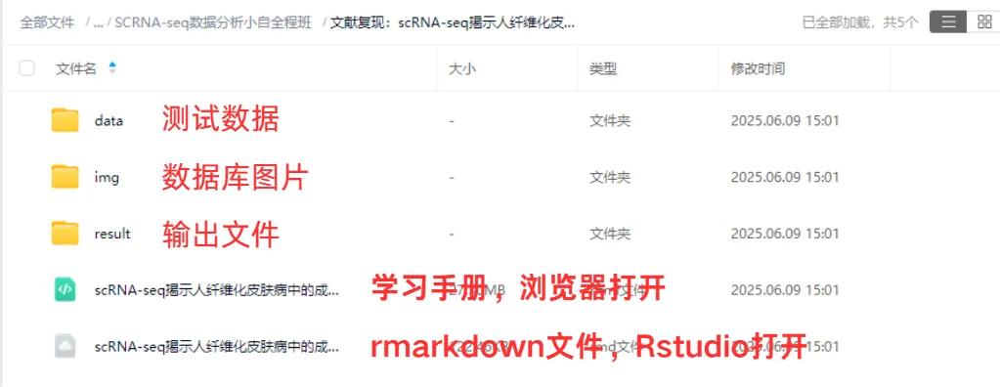

直播文章复现| scRNA-seq揭示人纤维化皮肤病中的成纤维细胞异质性与增殖
原文：https://mp.weixin.qq.com/s?__biz=MzAwMzIzOTk5OQ==&mid=2247530696&idx=1&sn=c90298fbe01b150ad7779f77294c6a25&chksm=9b3c0198ac4b888e6a2dd5797a000ce744c5f66049227a4995fb5130c2606fecd1ba18cb9394#rd 合集：生信基地

学习手册

 纤维化是一种以成纤维细胞增殖和细胞外基质（ECM）过度积累为特征的病理过程，它可影响任何器官，导致组织瘢痕形成和器官功能障碍。新的证据表明成纤维细胞实际上是形态和功能异质的细胞群体。 这篇文章中，作者通过使用 scRNA-seq探索了皮肤瘢痕中的成纤维细胞异质性，发现瘢痕中成纤维细胞可以被分为4个亚群, 分泌状、分泌网状、间充质和促炎性。这些发现有助于我们更深入地理解纤维化皮肤疾病的病理，并为纤维化治疗提供潜在的靶点。本教程配合scRNA-seq小学期课程进行了全新修订，用于我们最后的手把手实战教程。本周六、日09:00-17:00进行复现直播，主要内容包括：数据整合去批次、细胞周期计算、细胞比例可视化、细胞降维、基因表达小提琴、FeaturePlot、热图可视化、亚群分析、细胞通讯、拟时序分析、差异计算与富集分析等。可以说是把scRNA-seq小学期** 课程学习的技能融会贯通到实战，完整课表见：
纤维化是一种以成纤维细胞增殖和细胞外基质（ECM）过度积累为特征的病理过程，它可影响任何器官，导致组织瘢痕形成和器官功能障碍。新的证据表明成纤维细胞实际上是形态和功能异质的细胞群体。 这篇文章中，作者通过使用 scRNA-seq探索了皮肤瘢痕中的成纤维细胞异质性，发现瘢痕中成纤维细胞可以被分为4个亚群, 分泌状、分泌网状、间充质和促炎性。这些发现有助于我们更深入地理解纤维化皮肤疾病的病理，并为纤维化治疗提供潜在的靶点。本教程配合scRNA-seq小学期课程进行了全新修订，用于我们最后的手把手实战教程。本周六、日09:00-17:00进行复现直播，主要内容包括：数据整合去批次、细胞周期计算、细胞比例可视化、细胞降维、基因表达小提琴、FeaturePlot、热图可视化、亚群分析、细胞通讯、拟时序分析、差异计算与富集分析等。可以说是把scRNA-seq小学期** 课程学习的技能融会贯通到实战，完整课表见：
 -Biomamba
-Biomamba

所见即所得
学习手册以html文件格式提供，可在浏览器中打开并翻阅学习：

教程目录 ：
一、文献解读
1.0 复现集锦
（1）原文集锦
（2）代码复现集锦
1.1 背景介绍
1.2 主要内容
（1）scRNA-seq揭示正常瘢痕和纤维性皮肤病真皮组织的细胞异质
（2）瘢痕疙瘩和正常瘢痕中成纤维细胞形成不同的细胞亚群
（3）纤维化皮肤病中间充质成纤维细胞特征的鉴定
（4）成纤维细胞亚群中的配体-受体相互作用分析
（5）间充质成纤维细胞通过POSTN促进瘢痕中胶原蛋白表达
（6）sC4 成纤维细胞比 sC1 成纤维细胞更像间充质细胞
（7）间充质成纤维细胞在硬皮病中增加
1.3 总结讨论
二、准备工作
2.1 硬件准备
2.2 单细胞基础
三、数据下载、处理和可视化
3.0 数据下载
3.1 读取数据（10X标准数据）（barcodes、features、matrix）
3.2 数据整合
3.3 Seurat标准流程（harmony去批次）
3.4 细胞注释
3.5 细胞周期计算
3.6 数据可视化
（1）分样本细胞比例柱形图
（2）分样本细胞比例桑基图
（3）UMAP降维图
（4）Marker小提琴图
（5）Marker FeaturePlot
（6）Marker DotPlot
（7）Marker热图
3.7 成纤维细胞亚群
（1）亚群细分
（2）分样本细胞比例柱形图
（3）亚群分样本降维图
（4）基因差异表达提琴图
（5）细分注释
（6）注释后Marker展示
（7）Mesenchymal_Fib组间差异分析
（8）Mesenchymal_Fib差异基因富集分析
3.8 间充质成纤维细胞在纤维化皮肤疾病中的特性
（1）分样本基因表达FeaturePlot
（2）分组基因表达箱线图
（3）亚群间差异基因热图
（4）Mesenchymal_Fib相对其他FIB亚群上调差异基因富集
（5）marker基因堆叠小提琴图
3.9 细胞通讯分析
（1）亚群标签映射回细胞大类
（2）Normal组细胞通讯
（3）Keloid组细胞通讯
（4）细胞通讯热图
3.10 拟时序分析
3.11 Mesenchymal_Fib两个亚群间差异和富集
四、参考单细胞教程全收录欢迎致谢
文末下载链接中包含以下内容：

测试文件约12.17GB ，大家注意按需下载！

往期订阅


生信基地现已开放终身订阅，现已包含几十篇订阅资料，未来37年持续更新：那就开放一个终身订阅吧~
2025订阅合辑：
2025订阅须知《Cell》复现|中性粒细胞scRNA-seq图谱阐明抗肿瘤抗原呈递效力
《Cancer Cell》|时空单细胞揭示CRC的PD-1治疗免疫细胞动态
代码复现|吞噬作用增强肿瘤中巨噬细胞的氧化代谢和免疫抑制特征一文学会scRNA Velocity剪切速率分析
一文学会四种scRNA-seq轨迹分析
一文学会四种scRNA-seq细胞通讯分析
一文学会四种基因共表达网络分析
一文学会四种scRNA-seq拷贝数变异分析
分子批量对接与亲和力热图绘制
代码复现| scRNA-seq揭示人纤维化皮肤病中的成纤维细胞异质性与增殖
持续更新中~
 解锁前需阅读：2025订阅须知
解锁前需阅读：2025订阅须知
订阅后解锁下方学习手册链接：
请联系[Biomamba_zhushou]获取文件提取码
链接:
https://pan.baidu.com/s/1h4hHWV4FF7BBkzZthDU9KA
整个订阅合集的百度云下载地址可见:
https://pan.baidu.com/s/1yXzQi0zBqh4ZLR6Hznckiw?
-Biomamba

如何联系我们

 留一个领取资料、开箱即用的单细胞分析镜像的微信号[Biomamba_zhushou]，方便各位随时交流。同时我们也构建了交流群矩阵，欢迎大家入群讨论。
大家可以阅读完这几篇之后添加给生信入门初学者的小贴士
没有检索，就没有发言权
留一个领取资料、开箱即用的单细胞分析镜像的微信号[Biomamba_zhushou]，方便各位随时交流。同时我们也构建了交流群矩阵，欢迎大家入群讨论。
大家可以阅读完这几篇之后添加给生信入门初学者的小贴士
没有检索，就没有发言权
已有生信基地联系方式的同学无需重复添加

 您点的每个赞和在看，我都认真当成了喜欢
您点的每个赞和在看，我都认真当成了喜欢